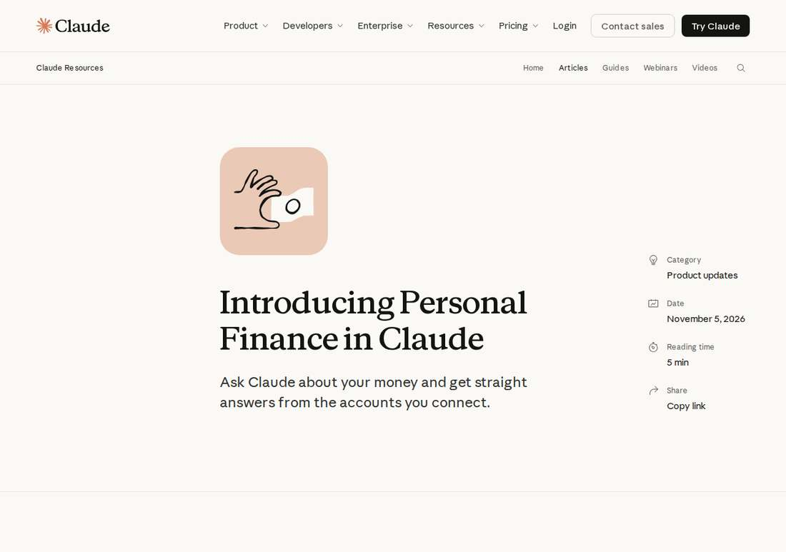

Anthropic Lets Claude Read Your Bank Accounts in Read-Only Personal Finance Beta
Anthropic launched Personal Finance in Claude on November 5, 2026, a read-only beta for Pro, Max and Ultra subscribers in the U.S. that connects bank and card accounts through Plaid and answers money questions from up to two years of transactions; Claude cannot move, manage or invest money, and the feature carries no ads.
- 01THE ANNOUNCEMENT — Anthropic announced Personal Finance in Claude on November 5, 2026, rolling out in beta this week to Pro, Max and Ultra subscribers in the U.S., with bank and card accounts connected through Plaid.
- 02THE CONFIRMATION — Reuters and TechCrunch confirmed the rollout the same day, agreeing on the plans, the Plaid connection and the read-only limits; Anthropic's own blog post was opened and verified in full.
- 03THE WATCHPOINT — Whether users adopt a chatbot with read access to their bank accounts, whether banks accept Anthropic's invitation to partner, and whether the beta expands beyond the three paid tiers.
WHAT HAPPENEDWhat Happened
Anthropic announced Personal Finance in Claude on November 5, 2026, rolling out in beta this week to Pro, Max and Ultra subscribers in the United States. Users connect their bank and card accounts through Plaid and ask Claude about balances, spending and bills in plain language, with answers in everyday language drawn from their own balances and transactions.
Access is read-only by design: Claude cannot move, manage or invest money, and the feature is not designed to give investment advice. For each account a user chooses to connect, Claude sees the bank's name, the account's name, type and last four digits, balances and credit limits, and up to two years of transactions. Users sign in to their bank themselves through Plaid, so Claude never asks for or sees a bank password, and an account can be unlinked at any time, after which Claude can no longer see its data.
Conversations in the Personal Finance hub are not used to train Anthropic's models, and the feature carries no ads or sponsored recommendations. Anthropic also offers no credit cards, loans or savings accounts of its own. The post prints its own caveat in the same breath: Claude can make mistakes in its answers, so users should ask which transactions sit behind a number and check important figures with their bank.
Anthropic's worked example shows the intended use: asking "Where did my money go this month?" totals $4,309.37 in spending, more than half on rent and utilities and $1,024.51 on food and drink, then projects $1,393.22 left before payday after four upcoming payments from the checking account. The launch follows ChatGPT's similar personal finance tools from May, also built on Plaid, and lands ahead of Anthropic's highly anticipated initial public offering, according to Reuters. Leak trackers had spotted the feature in unreleased app screens in September and October under the development name Claude Money.
WHY IT MATTERSThe read-only line is the whole product
Every design choice in this launch answers the same question: why should anyone let a chatbot see two years of bank transactions. Read-only access, no training on hub conversations, no ads, no house financial products, and a printed warning that the answers can be wrong. Anthropic is selling trust as the feature, not the arithmetic.
That framing also sets the competitive line against ChatGPT Finances, which opened the same bank-data layer in May on the same connector, Plaid. The products are near-identical on the surface; the difference Anthropic is pitching is what Claude cannot do with the data, and what it promises not to learn from it. Whether users accept that trade is the real test, and it will show up in adoption, not in the announcement.
WHY IT MATTERSA consumer finance play weeks before an IPO
Reuters frames the timing plainly: the rollout comes ahead of Anthropic's highly anticipated initial public offering. A consumer product that touches everyday money is a different story for public-market investors than an enterprise agent platform, and it arrives while Anthropic's S-1 is already public and its revenue figures are being picked over.
The post's closing section points further ahead: Anthropic calls Personal Finance a first step and says it is exploring ways for Claude to work alongside licensed professionals and regulated firms, inviting banks, wealth managers and financial services companies to help shape it. The signal to watch is whether banks sign on as partners, and whether the beta expands beyond the three paid tiers.
SIGNAL JUDGMENT — ANALYSISThe read-only boundary is the story
Tokenta Signal's judgment: the feature itself is table stakes, ChatGPT has offered the same Plaid-backed money view since May. What matters is the boundary Anthropic drew around it: read-only, no training on hub chats, no ads, no house products, and a printed admission that the answers can be wrong. That is a trust pitch aimed at users who would never hand a chatbot their bank login, and at investors reading the S-1 weeks before an IPO. Watch whether banks take up Anthropic's invitation to partner, and whether the beta ever reaches beyond the three paid tiers.
WHAT REMAINS UNCERTAINWhat Remains Uncertain
EVIDENCEEvidence

Confirmed by two sources: Anthropic's official blog post and Reuters same-day coverage, with TechCrunch in agreement. Original links opened and verified.
PRIMARY SOURCESPrimary Sources
- Anthropic official blog: Introducing Personal Finance in Claude
https://claude.com/resources/articles/introducing-personal-finance-in-claude - Reuters: Anthropic rolls out personal finance feature for Claude
https://www.reuters.com/business/anthropic-rolls-out-personal-finance-feature-claude-2026-11-05/ - TechCrunch: Claude can now analyze your spending with its new Personal Finance tool
https://techcrunch.com/2026/11/05/claude-can-now-analyze-your-spending-with-its-new-personal-finance-tool/
RELATEDRelated Intelligence
- FAA Lifts Nationwide Ground Stop After Four Hours; Officials Blame Aging Equipment, Rule Out Cyberattack
- FAA Grounds All U.S. Departures in First Nationwide Stop Since 2023; New AI Routing Tool Faces Scrutiny
- Starship Flight 15: All 26 Starlink V3 Satellites Deployed; Booster 22 Broke Apart After Divert
- Nvidia Board Approaches Arm CEO Rene Haas as Huang Successor; Employees Push for Founder's Return